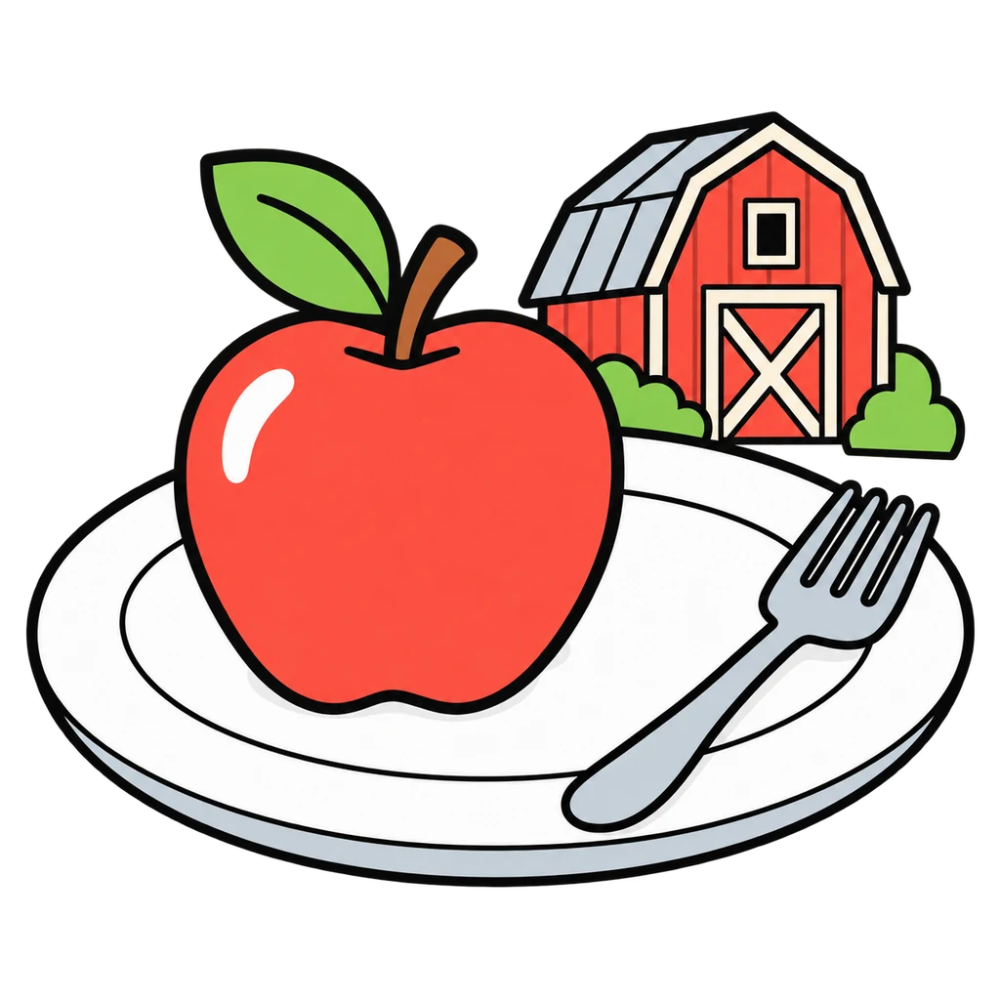
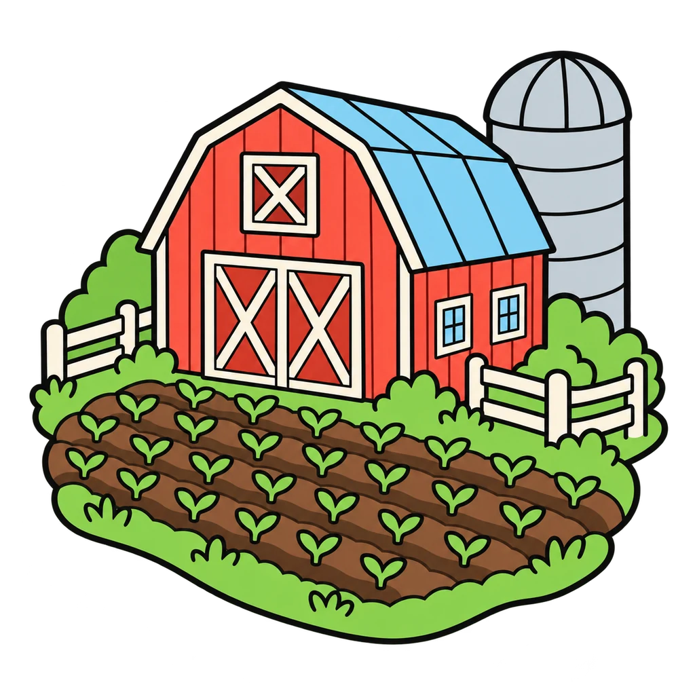
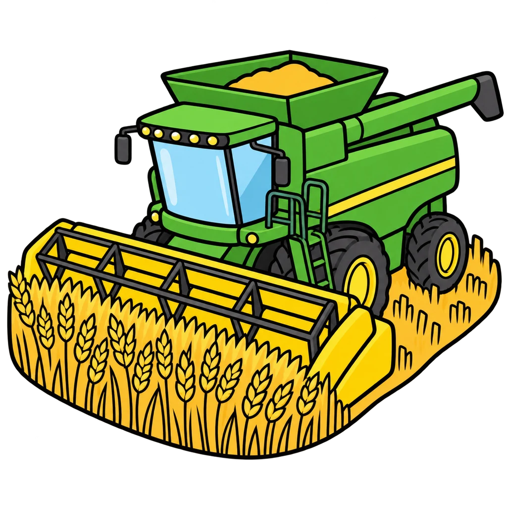
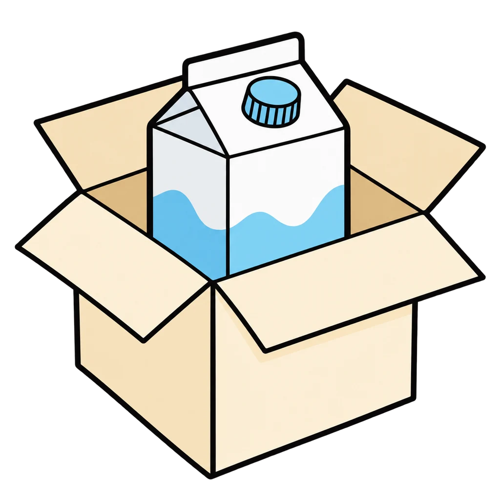
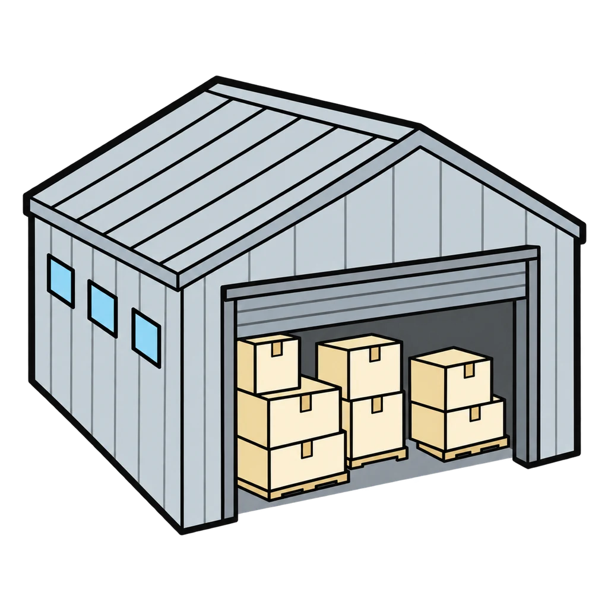
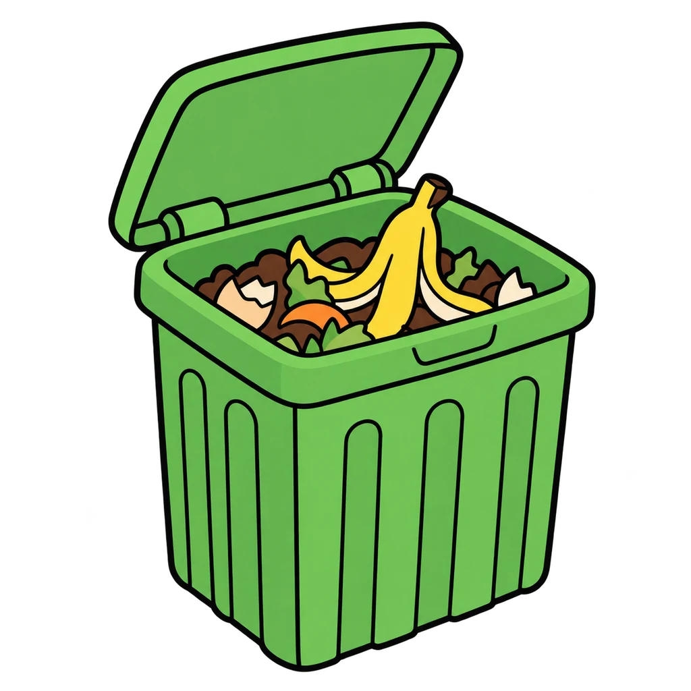
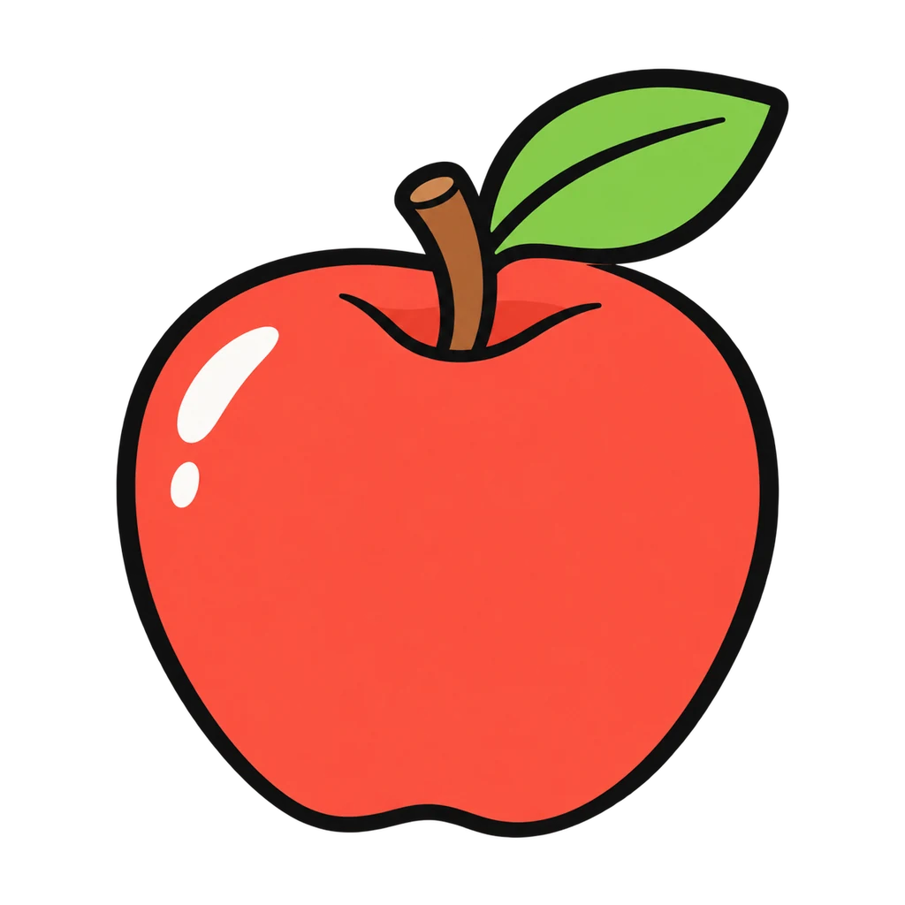
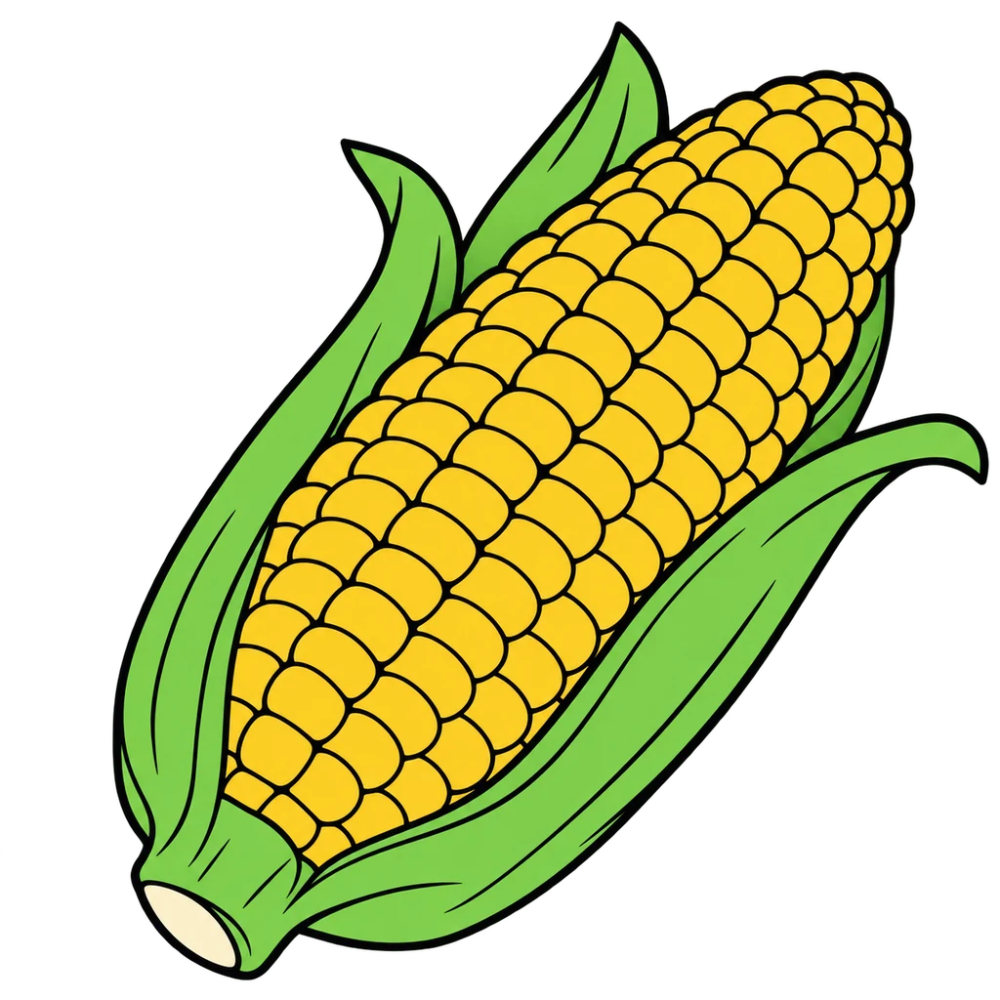
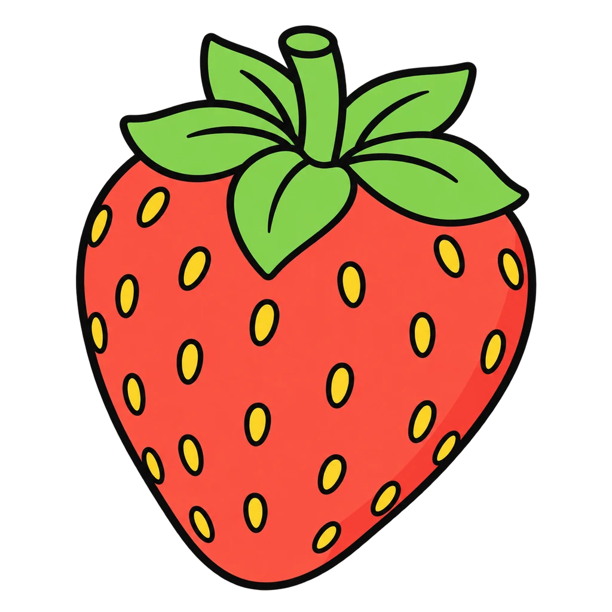

Reviews Lesson 6.1, Lesson 6.2. This game reviews Lesson 6.1, Trace a Food From Farm to Plate and Lesson 6.2, Local, Seasonal, and Global. Round 1 uses the lesson's ten steps in the lesson's words (grow or raise, harvest, process, package, transport, store, sell, cook, eat, leftovers and waste) for one of the four traced foods (milk, bread, banana, chicken nugget), shuffled with the two decoy cards from Handout 6.1; every placed card names the job at that step. Round 2 draws a month and eight foods from the New York seasonal chart in Handout 6.2: is it from New York that month or not? Fresh (F) and stored (S) both count as New York grown, the way the handout keys them. Use it as the do now before Lesson 6.3 or as review before the Food Systems Quiz. Nothing is saved when the page closes.

Farm to Fork
A food shows up with its steps shuffled. Tap the ten steps in order before the clock runs out. Then: in season here, or not?
How to play







